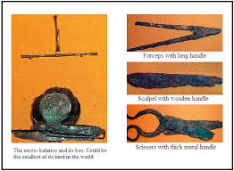
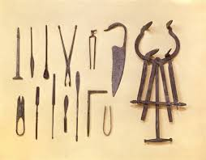

Sri Lanka was known by various people by various names. It has been called Lanka by the ancient Sinhalese, Taprobane by the Greeks, Serendib by the Arabs, Ceilao by the Portuguese, Ceylan by the Dutch and Ceylon by the British. With the promulgation of the new constitution in 1972, the name was officially changed to Sri Lanka. The history of medicine in Sri Lanka has been fashioned over the centuries by a synthesis of several intrinsic and extrinsic factors, some of which were unique to the country.  Being an island, Sri Lanka insulated to a large extent from external forces influencing medicine. Disease being as old as mankind, prehistoric man in Sri Lanka would have evolved his own approach to sickness which need not necessarily have invoked the use of herbs and other drugs. The history of medicine in Sri Lanka can be divided in to major historical periods in its rule. There are: Ancient Medical Practices, Medicine under Sri Lankan kings, the Portuguese period, the Dutch period. There is hardly any information on the state of medicine in Pre-historic time. It is traditionally believed that Ravana, the prehistoric King of Lanka of Ramayana fame was well-versed in medical lore. Sri Lanka was ruled by its own kings from the inception of its written history until 1815, when the British conquered the Kandyan kingdom. Considerable information on the structure of the medical system that prevailed during this period is available from literary and archaeological sources. The ancient chronicle, the Mahavamsa, is undoubtedly the richest single source of such information. In that time there were several Hospitals. The Portuguese first arrived in Colombo in 1505. Medicine practiced by the Portuguese at the time was not entirely Western, for it had an oriental flavor as well. Some of their medicinal knowledge was derived from the Moors of Spain. That was the Portuguese period in Sri Lanka. This was followed by the Dutch period. The Dutch completed the capture of the maritime provinces by defeating the long drawn out siege of Colombo in 1656.
The impact that the Dutch had on the local medicine was only a fraction more than in the case of the Portuguese. They built more hospitals than the Portuguese, and that again was for the purpose of serving their forces, shipping personnel and other Dutch  nationals in the country. Hospitals were established in strategic garrison towns, several of which possessed harbor's as well. The British captured the maritime provinces from the Dutch in 1796, and annexed the Kandyan kingdom in 1815. They ruled the country till 1948 when Sri Lanka achieved independence. The early phase of British medicine belonged to the military who controlled both the military and civil health institutions. With the creation of a separate Civil Medical Department in 1858, a new phase was born by which medical facilities were provided to the civilian by a department free of military control. The British were very much concerned about the health of the local population. Several Governors, in their addresses to the Legislative Council, indicated their solicitude for the health of the people.
Email Us at:
MinistryofHealth_sl@gmail.com
Hotline
0112468348
Address Headquaters